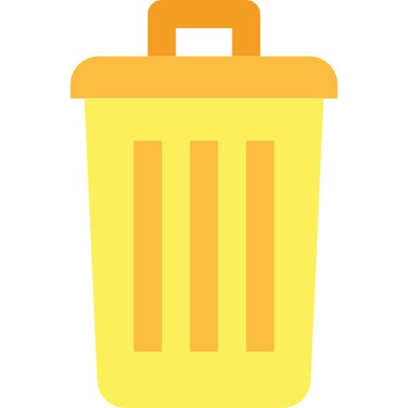

Yellow Bin
Your recycling bin (yellow lid) is for common household packaging items typically bought at a supermarket and found in your kitchen, bathroom or laundry.
These items can go in your recycling bin
| Categories of Waste | Example Images | More Examples |
|---|---|---|
| Hard Plastic bottles and containers |  |
|
| Paper and cardboard |    |
|
| Glass bottles and jars (empty, cleaning not required, leave lids on) |  |
|
| Steel cans |   |
|
| Aluminium cans and foil |   |

Red Bin
Your landfill bin (red lid) is for any items that cannot be recycled through your recycling bin, food and garden waste bin or other recycling services.
All rubbish must be bagged or wrapped before going in your red bin
| Categories of waste | Example Images |
|---|---|
| Takeaway coffee cups, lids, straws |  |
| Plastic bags, plastic film, soft plastics (read about recent changes to soft plastics recycling and new options for Monash residents) |  |
| Long life milk and juice containers (UHT, Tetra Pak) |  |
| Food packaging, fruit stickers |  |
| Baby wipes, wet wipes |  |
| Nappies, pet waste, sanitary and incontinence products (wrapped) |  |
| Broken drinking glass, mugs, ceramics (wrapped) |   |
| Broken crockery, cutlery, pyrex (wrapped) | 
 |
| Clothing, footwear, textiles |  
|
| Cosmetic containers |  |
Green Bin
Your food and garden waste bin (green lid) is for food scraps, garden prunings and some organic material. The bin is collected every week
These items can go in your food and garden waste bin
| Categories of waste | Example Images | More Example |
|---|---|---|
| Garden prunings |   |
Put garden prunings loose in your bin. e.g. |
| Food scraps |   |
Food can go in the bin loose or wrapped in paper towel or newspaper. No other food packaging is accepted. e.g. |
| Other organic material |  |